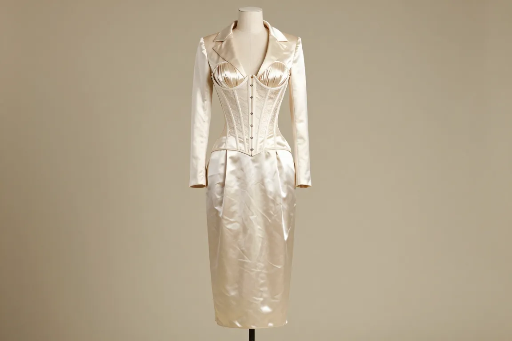

mote · 1984–1999 · også: Korsetteri som kjole, Lingerie-påkledning, Bustier og korsetttopp
Designere i 1980- og 1990-årene tok korsettet, kjegle-BH-en og underkjolen ut av garderoben og satte dem på gaten. Livene var av sateng og ull med bein, og ble båret som topper, jakker og kjoler.

Kjerneidé
Det som var skjult er nå kjolen: et korsett, en BH eller en underkjole vist åpent gir kroppen en bygget, offentlig form.
Designprinsipper
Skjær korsettet etter historiske mønstre, med 10 til 20 paneler med bein og en busk eller en snøret rygg.
Kok ideen ned til ett plagg: et liv med bein som står som en topp, en jakke eller en kjole.
Bruk ytterstoff til undertøyformen: sateng, ulltweed, skinn eller bomullsdrill.
Form koppen som en kjegle i sateng og sett den ved brystet, med en BH av metallkjegler for en ekstrem versjon.
Kombiner korsettet med et enkelt skjørt, en skreddersydd jakke eller bukser, slik at kontrasten synes.
Vis plagget fullt ut: en synlig busk, en synlig snøring og en synlig stropp.
Legg til en underkjole i silkesateng, 2 til 3 mm søm og et skråskåret snitt.